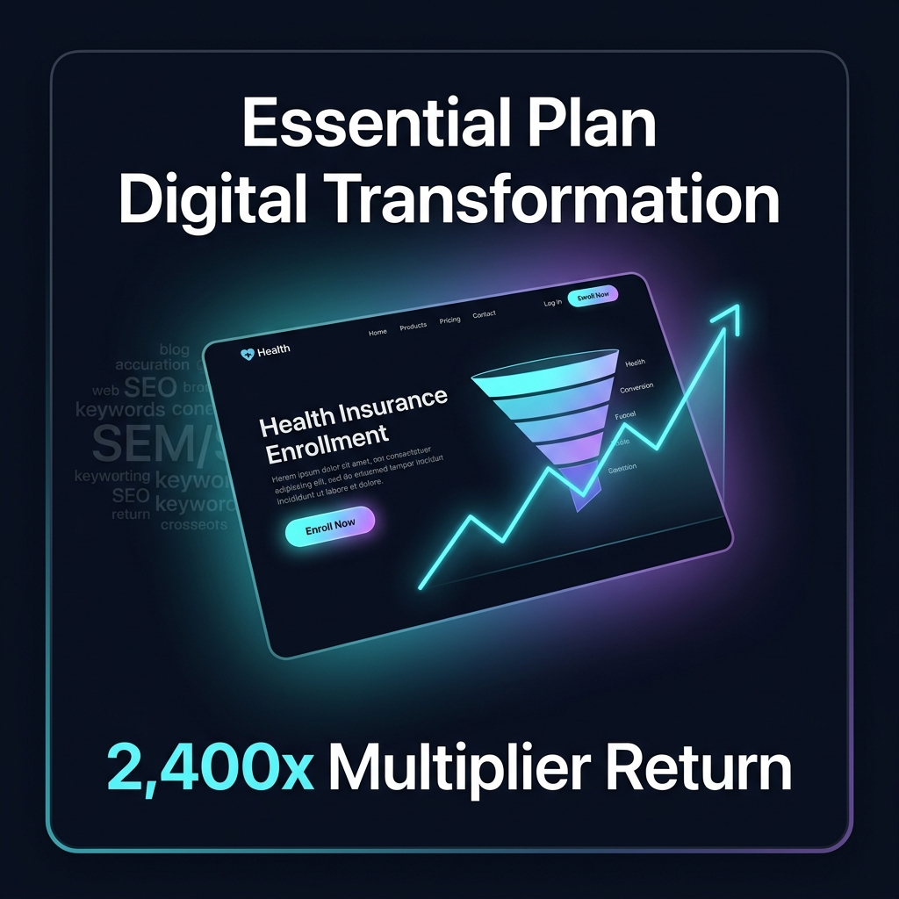
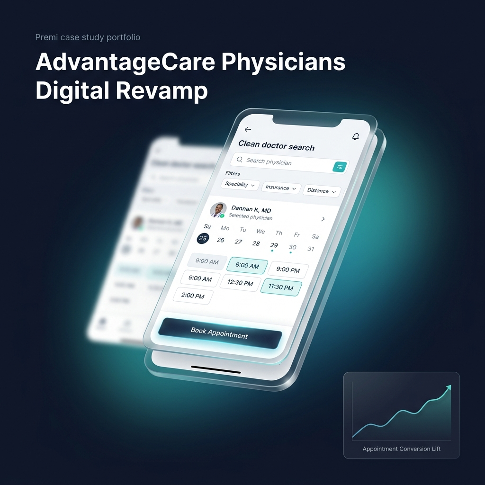
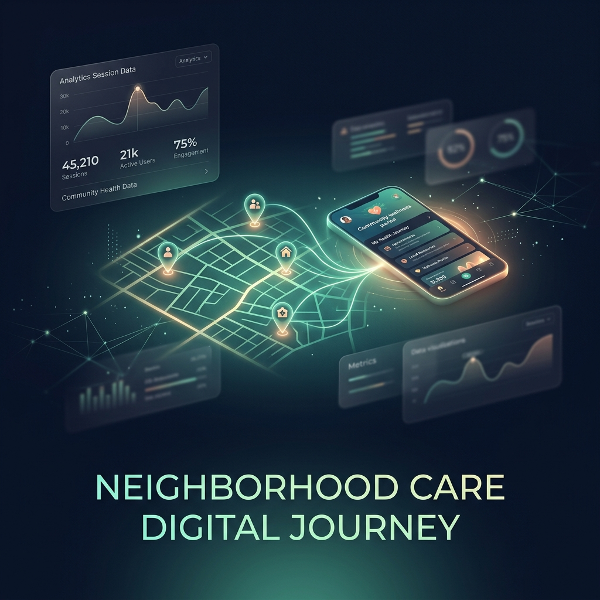
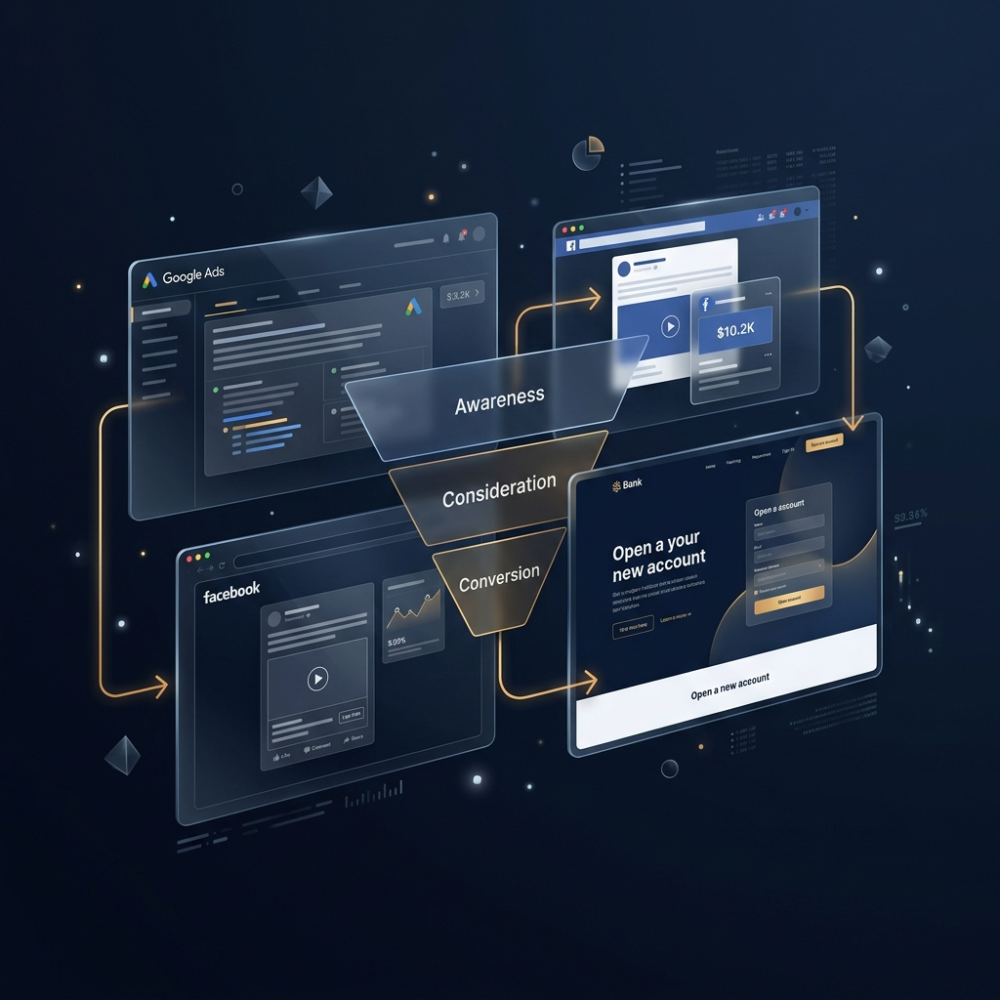
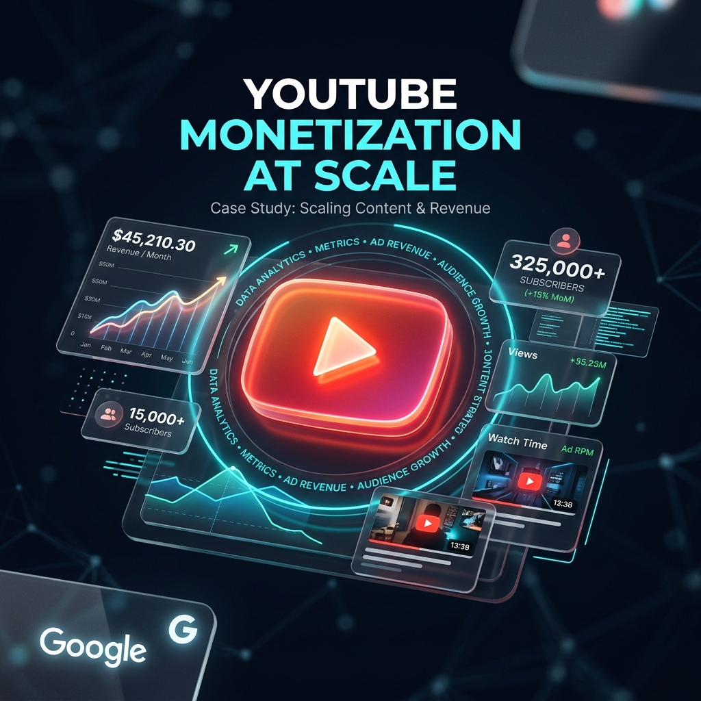

Featured Projects
Real-world impact — filter, search, or switch layout views to explore each initiative

Spearheaded digital strategy and UX overhaul for the "Essential Plan" — a $0 premium health program for low- to moderate-income NY State residents. Maximized high-quality leads by aligning SEM, organic SEO, and a frictionless user journey on the conversion landing page.
Data-Driven Strategy & Cross-Functional Collaboration
- Partnered with Project Manager Aaron Brickman for agile execution and closed-loop feedback
- Collaborated with call center managers to secure end-to-end analytical data bridging digital and call outcomes
- Worked with UX/UI Designer Jennifer Wien and developers Anano Nadareishvili & Kevin Mitchell to revamp the conversion page
- Teamed with Content Specialist Dana Linett-Silber on targeted SEO updates for high-intent organic traffic
- Restructured SEM campaigns to drive high-value traffic, lowering bounce rates and improving ad quality scores

Transformed the AdvantageCare Physicians digital patient journey from a traditional, high-friction appointment process to a highly intuitive, "ZocDoc-like" platform empowering patients to seamlessly find care and schedule appointments online.
Key Strategic Actions
- Launched real-time, self-service scheduling with transparent availability — Jennifer Wien (UI/UX Designer) crafted the clean, accessible interface
- Optimized the find-a-provider experience with advanced filtering by specialty, location, and insurance
- Aligned digital transformation with corporate vision alongside Christopher Clarke (AVP of Corporate Marketing)
- Kyle Nowinski (Senior Analytics Specialist) provided data-backed validation at every stage
- Aaron Brickman (Project Manager) expertly managed cross-functional timelines and milestones

Led the end-to-end digital experience overhaul for EmblemHealth's "Neighborhood Care" — a network of in-person community service and wellness locations. Modernized the digital journey to seamlessly bridge online engagement with physical, in-person care.
Key Contributions
- Redesigned the digital discovery journey for community service locations pre-Summer 2023 launch
- Implemented analytics-driven improvements to scheduling, class registration, and resource accessibility
- Created seamless bridge between online engagement and in-person care delivery
- Continuously optimized based on engagement metrics, session data, and conversion tracking

Spearheaded the turnaround of a critical financial institution account at risk of churning. Architected a multi-point digital strategy overhauling paid omnichannel presence and transforming the customer acquisition funnel.
Key Contributions
- Conducted deep-dive audit of the end-to-end user journey identifying friction points across all touchpoints
- Implemented conversion tracking and retargeting framework connecting ad spend to site journey actions
- Ensured digital promotional material was readily available for delayed-action users who wanted to revisit monetary incentives later
- Built comprehensive attribution model tracking repeated site visits and downstream conversions

Managed the implementation and oversight of YouTube's various video content monetization strategies. Deployed software and data-driven recommendations to maximize revenue across high-volume digital content channels.
Key Contributions
- Developed complex monetization strategies for high-volume digital content across YouTube and social media
- Streamlined website creation workflows driving significant traffic increases
- Collaborated with cross-functional engineering teams on traffic acquisition strategies
- Applied foundational analytics to scale monetization and establish performance measurement frameworks